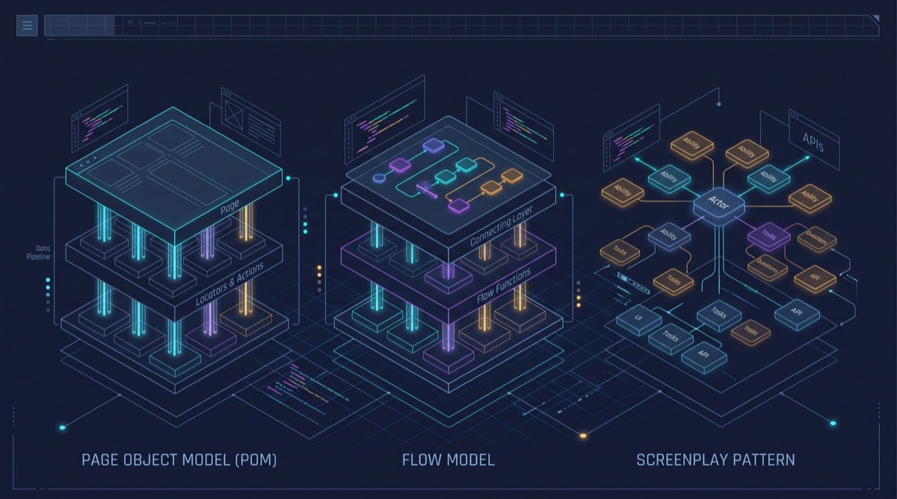

Kada Page Object Model prestane da se skalira: poređenje Flow modela i Screenplay obrasca
Page objekti rade dok paket testova ne naraste. Kada dodati sloj tokova, kada Screenplay opravdava svoju složenost, a kada je najbolje ostati gdje ste.
Većina paketa za UI automatizaciju počinje na isti način: jedna page object klasa po ekranu, lokatori kao svojstva, metode koje opisuju akcije. To odlično radi za prvih nekoliko desetina testova. Onda paket naraste, checkout, onboarding i podešavanja počnu da dijele korake, i odjednom tri različita spec fajla implementiraju „prijavi se, dodaj artikal, idi na checkout" na tri malo različita načina. Uobičajeno rješenje je da se page klasama dodaju nove metode, sve dok jedna od njih ne dostigne osamsto linija i niko više ne želi da je dira. To je trenutak kada vrijedi znati da postoje dva ustaljena izlaza, a ne samo jedan, i da nijedan nije besplatan.

Gdje Page Object Model prestaje da pomaže
Page Object Model (POM) sakriva lokatore i interakcije niskog nivoa iza po jedne klase za svaku stranicu, pa test poziva LoginPage.login(user, password) umjesto da piše sirove selektore. Koristi su stvarne: manje dupliranja nego kod direktnih Selenium poziva, zajednički rječnik i blaga kriva učenja, zbog čega je to pravi izbor za male timove i male pakete testova.
Problemi se pojavljuju kako rastu paket i tim. POM je konvencija, a ne stroga specifikacija, pa ga svaki tim implementira malo drugačije, zbog čega veliki paketi postaju nedosljedni od autora do autora. Poslovni tokovi koji se protežu kroz više stranica (checkout, onboarding, forma u više koraka) nemaju svoje mjesto, pa se kopiraju iz testa u test. Page klase na kraju miješaju lokatore, akcije niskog nivoa i logiku tokova, što krši princip jedne odgovornosti i čini refaktorisanje rizičnim. Ništa od ovoga ne znači da je POM bio pogrešan izbor — znači da je paket prerastao obrazac sa kojim je počeo.
Srednje rješenje: sloj tokova
Najjednostavnije rješenje je da se iznad postojećih page objekata doda tanak sloj poslovnih tokova koji se mogu ponovo koristiti, umjesto da se page objekti zamijene. Flow funkcija se čita kao cilj, a page objekti ispod nje ostaju potpuno isti.
// flows/checkout.js
export const CheckoutFlow = {
async buyItem(item) {
await ProductsPage.open(item);
await ProductPage.addToCart();
await CartPage.goToCheckout();
await CheckoutPage.payWithSavedCard();
},
};
// test
test('guest can buy a single item', async () => {
await CheckoutFlow.buyItem('wireless-mouse');
await expect(OrderPage.confirmationBanner).toBeVisible();
});Ovo ne zavisi ni od jednog frejmvorka i ubacuje se u postojeći Playwright, Cypress ili Selenium paket bez prepravljanja. Cijena je to što ne postoji standard koji kaže šta pripada toku, a šta page objektu, pa bez dogovorene konvencije folder sa tokovima može postati smetlište funkcija koje su pola poslovna logika, pola UI detalji — jednako zapetljane kao i prvobitne page klase, samo jedan sloj dalje.
Veći skok: Screenplay obrazac
Screenplay ide dalje tako što mijenja jedinicu apstrakcije sa „stranice" na „aktera". Akter dobija sposobnosti (abilities, npr. pretraživanje weba ili pozivanje API-ja), izvršava zadatke (tasks, akcije bez povratne vrijednosti) i postavlja pitanja (questions, čitanja koja vraćaju stanje za provjere). Interakcije su generičke, pa jedna interakcija „popuni polje" ili „klikni" radi nad bilo kojim elementom, umjesto da svaki page objekat ima sopstvenu kopiju.
const alex = Actor.named('Alex').whoCan(BrowseTheWeb.using(page));
await alex.attemptsTo(
Login.withCredentials('alex@example.com', 'secret'),
AddItemToCart.named('wireless-mouse'),
Checkout.withSavedCard(),
);
const confirmation = await alex.asks(ConfirmationBanner.text());
expect(confirmation).toContain('Order confirmed');Pošto sposobnosti aktera nisu ograničene na browser, isti akter može da izvršava UI korake, pozove API da pripremi stanje i upita bazu da provjeri sporedni efekat — sve kroz jedan dosljedan rječnik. To je zaista korisno u velikim scenarijima sa više aktera (dva korisnika koja pregovaraju o razmjeni, administrator koji odobrava nešto što je kupac poslao), gdje se POM, pa čak i sloj tokova, obično raspadnu.
Zamke i ograničenja
Cijena Screenplay-a je stvarna, a ne teorijska. Zahtijeva više dizajna unaprijed i više sigurnosti u OOP-u nego što većina QA timova ima prvog dana, zajednica i alati su manji i uglavnom koncentrisani oko konkretnih implementacija (Serenity/JS, ScreenPy, Boa Constrictor), a uvođenje novog testera u posao traje primjetno duže nego kada mu se samo da page objekat. Timovi koji ga usvoje za mali ili srednji paket obično dobiju više ceremonije nego koristi — obrazac je napravljen za veliki obim, a ispod tog obima je samo dodatni teret.
Sloj tokova izbjegava taj trošak, ali nasljeđuje drugi: pošto ne postoji formalna specifikacija, dva inženjera u istom timu povući će granicu između „toka" i „page objekta" na različitim mjestima, a bez eksplicitne timske konvencije zapisane negdje, apstrakcija počinje da se razilazi. I bez obzira na to koji obrazac tim izabere, nijedan sam po sebi ne rješava nestabilne (flaky) i spore UI testove — strukturni obrazac utiče na održivost, ne na pouzdanost. Čest savjet timova koji su probali sva tri pristupa: izvršite datu UI akciju jednom da dokažete da radi, a zatim svuda drugdje koristite API pozive za pripremu i promjene stanja, jer to smanjuje nestabilnost i trajanje testova bez obzira na to koji sloj koristite.
Šta dalje
Prebrojte ljude koji održavaju vaš paket za automatizaciju i pogledajte koliko se tokova trenutno kopira između spec fajlova — to je bolji signal od same veličine paketa. Ako je u pitanju jedna do tri osobe i dupliranje je blago, ostanite na POM-u; on nije pokvaren. Ako se tokovi ponavljaju u pet ili više spec fajlova, prije uvođenja sloja tokova zapišite (doslovno, u README) šta pripada page objektu, a šta toku, da ne bi i taj sloj postao nered. O Screenplay-u razmišljajte tek ako tim ima četiri ili više ljudi koji održavaju testove, dovoljno OOP iskustva da održi disciplinu i scenarije koji zaista u istom testu obuhvataju UI, API i bazu — u suprotnom će kriva učenja koštati više nego što paket dobije.
Za više o održavanju automatizovanih testova pogledaj studiju slučaja mog Playwright CI pipeline-a, Preuranjene asertacije u Playwright-u i Samoiscjeljujući testovi: šta zaista popravljaju.
Izvori
- Choosing the Right Test Automation Design Pattern: Page Object Model, Flow Model Pattern, or Screenplay Pattern? — Cloudflight Engineering
- A Journey to Better Automation with the Screenplay Pattern — Applitools
- Playwright Page Object Model — SSW Rules